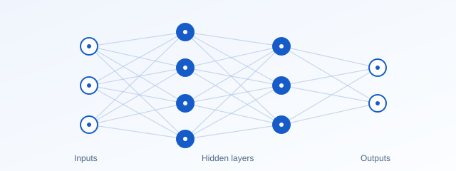

Process monitoring
Learn relationships in manufacturing data to support anomaly detection and control-chart design.
Research / Machine learning
Learning patterns. Improving statistical insight.
The foundations
Machine learning is a branch of artificial intelligence in which models learn patterns from data to make predictions or inferences about new observations. Its central objective is generalisation: useful performance beyond the data used for training. Neural networks, support vector methods and other learning algorithms can complement statistical modelling.
Background: IBM: Machine learning ↗ (opens in a new tab)

From methods to practice
Examples of how these methods can be used in practice.
Learn relationships in manufacturing data to support anomaly detection and control-chart design.
Model nonlinear relationships, including physical properties and dynamical-system behaviour.
Compare predictions on held-out observations to assess how well a model generalises.
My research
My published work combines machine learning with control charts and process monitoring, including support vector regression, neural networks and supervised learning. Related work includes deep-learning prediction of phase equilibria and physics-informed neural-network models for dynamical systems.
Research publications
Explore my journal publications on machine learning and its applications. Interdisciplinary work is included in each relevant research area.
Showing 9 of 9 publications
Expert Systems with Applications, 333, Article 133907.
DOI: 10.1016/j.eswa.2026.133907 (opens in a new tab)First available online in 2026; assigned to volume 333 (2027). Listed here under the online publication year.
The International Journal of Advanced Manufacturing Technology, 145(7–8), 5413–5441.
DOI: 10.1007/s00170-026-18607-3 (opens in a new tab)The International Journal of Advanced Manufacturing Technology, 144(12), 8273–8302.
DOI: 10.1007/s00170-026-18335-8 (opens in a new tab)Computers & Industrial Engineering, 212, Article 111750.
DOI: 10.1016/j.cie.2025.111750 (opens in a new tab)Computers & Industrial Engineering, 201, Article 110894.
DOI: 10.1016/j.cie.2025.110894 (opens in a new tab)Engineering Applications of Artificial Intelligence, 157, Article 111227.
DOI: 10.1016/j.engappai.2025.111227 (opens in a new tab)Quality and Reliability Engineering International, 41(5), 2032–2050.
DOI: 10.1002/qre.3760 (opens in a new tab)Journal of the Turkish Chemical Society Section B: Chemical Engineering, 8(1), 11–28.
DOI: 10.58692/jotcsb.1545110 (opens in a new tab)The International Journal of Advanced Manufacturing Technology, 76(1–4), 311–327.
DOI: 10.1007/s00170-014-6236-2 (opens in a new tab)Ongoing work
Research manuscripts are listed separately from published articles. Please contact me for the latest information on their progress.
For collaboration and related enquiries, please get in touch.